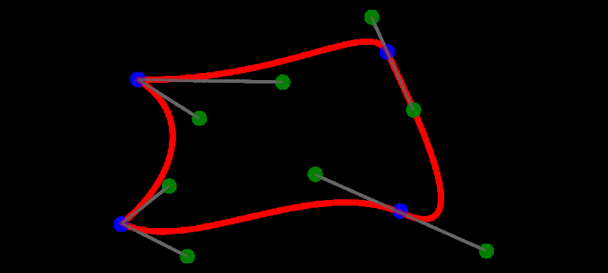
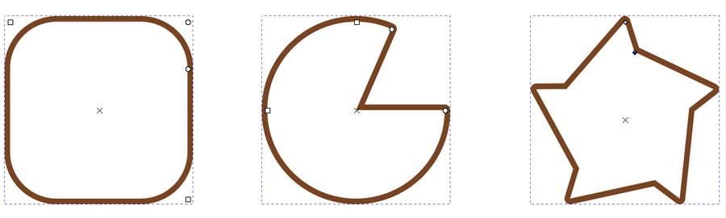

Curvas bézier consistem em polilinhas com segmentos retos ou curvos e são feitas com canetas bézier que podem ter nomes diferentes em diferentes softwares.
Antes de começarmos a ver a fundo como funciona uma curva (chamada ainda de caminho em alguns programas), vamos entender a diferença entre curvas e objetos primitivos.
Curvas:
As curvas são editadas a partir de seus vértices, ou nós, e podem ser distorcidas livremente, enquanto isso, objetos criados com as ferramentas de formas básicas nos programas de design gráfico costumam ser tratados como objetos primitivos, um retângulo, apesar de ser formado por quatro segmentos de linha, é tratado como um retângulo e não como uma curva bézier. Vejamos as peculiaridades que cada forma básica possui nos seguintes tutoriais rápidos de treinamento.
Formas Primitivas sendo modificadas (retângulo, elipse e estrela):
1. Clique na ferramenta retângulo.
2. Arraste numa área vazia da tela para desenhar.
3. Note os três pontos ou alças que aparecem nos cantos do retângulo, clique e arraste em cada um deles para entender seu funcionamento.
4. Uma das alças permite o arredondamento dos cantos, o mesmo pode ser feito alterando os valores Rx e Ry na Barra de Propriedades, enquanto a ferramenta retângulo estiver ativa.
5. Aperte a letra N para pegar a ferramenta Editor de Nós.
6. Com o retângulo selecionado e a ferramenta ativa, clique no menu Caminho → Converter em caminho.
7. Agora clique nos nós e arraste para verificar seu comportamento.
Após converter um objeto primitivo em caminho, ele se torna uma curva bézier, o que possibilita a edição livre de seus vértices.
1. Clique na ferramenta elipse.
2. Arraste numa área vazia da tela para desenhar.
3. Clique e arraste em cada uma das alças de manipulação da elipse para entender seu funcionamento.
4. Note que na barra de propriedades você pode alterar o comportamento da alça.
5. Aperte N para pegar a ferramenta Editor de Nós.
6. Com a elipse selecionada e a ferramenta ativa, clique no menu Caminho → Converter em caminho.
7. Agora clique e arraste em cada um dos nós para verificar seu comportamento.
1. Clique na ferramenta polígono.
2. Defina a quantidade de lados e o modo de criação como preferir.
3. Clique e arraste numa área vazia da tela para desenhar.
4. Clique e arraste nas alças para verificar seu funcionamento.
5. Aperte N para pegar a ferramenta Editor de Nós.
6. Com o polígono selecionado e a ferramenta ativa, clique no menu Caminho → Converter em caminho.
7. Agora clique e arraste em cada um dos nós para verificar seu comportamento.